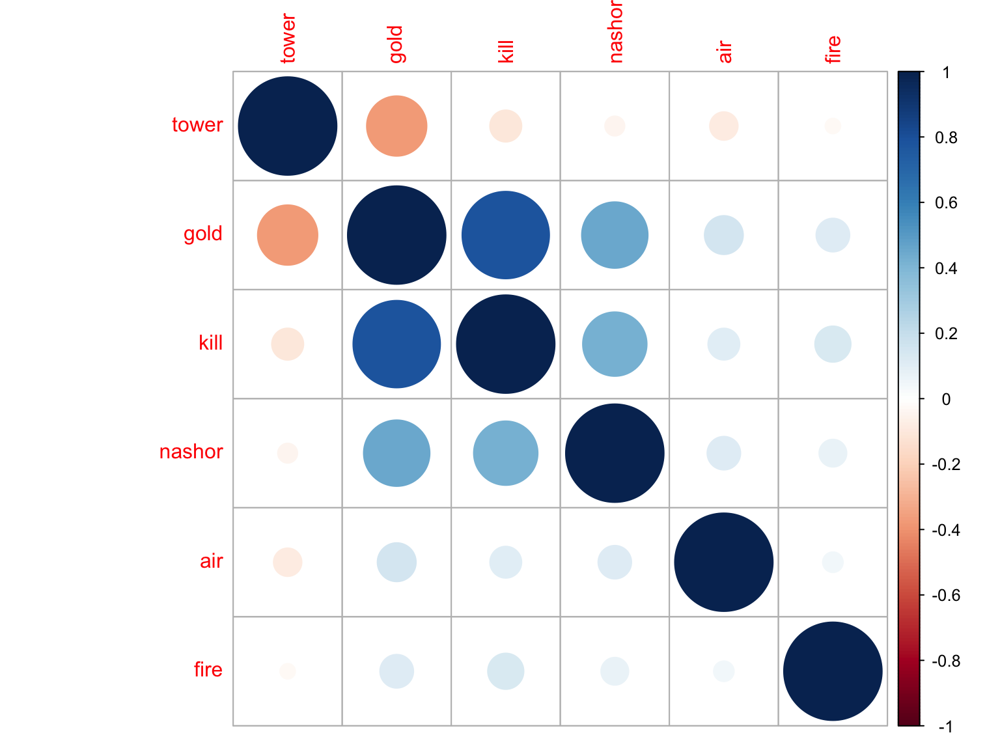

merge_file = read_csv("./data/merge.csv")## Parsed with column specification:
## cols(
## address = col_character(),
## year = col_double(),
## b_result = col_character(),
## bTowers = col_double(),
## rTowers = col_double(),
## outer_mean_diff = col_double(),
## golddiff_mean = col_double(),
## BARON_NASHOR = col_double(),
## DRAGON = col_double(),
## RIFT_HERALD = col_double(),
## AIR_DRAGON = col_double(),
## EARTH_DRAGON = col_double(),
## ELDER_DRAGON = col_double(),
## WATER_DRAGON = col_double(),
## FIRE_DRAGON = col_double(),
## bKills = col_double(),
## rKills = col_double(),
## diff = col_double()
## )merge_file =
merge_file %>%
mutate(
b_result = recode_factor(b_result, "lose" = "0", "win" = "1"),
kill_diff = diff,
golddiff_mean = golddiff_mean/100
) %>%
select(-diff)
final_log = merge_file %>%
mutate(b_result = factor(b_result)) %>%
glm(formula = b_result ~ golddiff_mean + BARON_NASHOR + DRAGON + AIR_DRAGON + EARTH_DRAGON + WATER_DRAGON + FIRE_DRAGON +golddiff_mean:BARON_NASHOR, family = "binomial")
log_table = final_log %>% broom::tidy()
log_table %>% knitr::kable(digits = 3)| term | estimate | std.error | statistic | p.value |
|---|---|---|---|---|
| (Intercept) | -1.216 | 0.100 | -12.217 | 0.000 |
| golddiff_mean | 0.101 | 0.004 | 26.850 | 0.000 |
| BARON_NASHOR | 1.191 | 0.064 | 18.475 | 0.000 |
| DRAGON | 0.293 | 0.041 | 7.151 | 0.000 |
| AIR_DRAGON | 0.299 | 0.086 | 3.476 | 0.001 |
| EARTH_DRAGON | 0.180 | 0.077 | 2.347 | 0.019 |
| WATER_DRAGON | 0.199 | 0.078 | 2.556 | 0.011 |
| FIRE_DRAGON | 0.602 | 0.081 | 7.419 | 0.000 |
| golddiff_mean:BARON_NASHOR | -0.031 | 0.003 | -10.167 | 0.000 |
The Final model statement: logit(Pr(b_result=1)) = round(pull(log_table,estimate)[1],digits=3) + pull(log_table,estimate)[2]golddiff_mean + round(pull(log_table,estimate)[3],digits=3)BARON_NASHOR + round(pull(log_table,estimate)[4],digits=3)DRAGON + round(pull(log_table,estimate)[5],digits=3)AIR_DRAGON + round(pull(log_table,estimate)[6],digits=3)EARTH_DRAGON + round(pull(log_table,estimate)[7],digits=3)WATER_DRAGON + round(pull(log_table,estimate)[8],digits=3)FIRE_DRAGON + round(pull(log_table,estimate)[9],digits=3)(golddiff_mean:BARON_NASHOR)
my_data =
merge_file %>%
filter(year != 2014) %>%
#select(-address, -year, -b_result, -bKills, -rKills, -bTowers, -rTowers) %>% #
select(outer_mean_diff, golddiff_mean, kill_diff, BARON_NASHOR, AIR_DRAGON, FIRE_DRAGON) %>%
rename(
tower = "outer_mean_diff",
gold = "golddiff_mean",
kill ="kill_diff",
nashor = "BARON_NASHOR",
air = "AIR_DRAGON",
fire = "FIRE_DRAGON"
) %>%
drop_na()
res <- cor(my_data)
round(res, 3) %>%
knitr::kable()| tower | gold | kill | nashor | air | fire | |
|---|---|---|---|---|---|---|
| tower | 1.000 | -0.374 | -0.105 | -0.040 | -0.083 | -0.024 |
| gold | -0.374 | 1.000 | 0.789 | 0.454 | 0.155 | 0.117 |
| kill | -0.105 | 0.789 | 1.000 | 0.427 | 0.104 | 0.134 |
| nashor | -0.040 | 0.454 | 0.427 | 1.000 | 0.116 | 0.079 |
| air | -0.083 | 0.155 | 0.104 | 0.116 | 1.000 | 0.043 |
| fire | -0.024 | 0.117 | 0.134 | 0.079 | 0.043 | 1.000 |
res2 = Hmisc::rcorr(as.matrix(my_data))
#res2[1] %>% knitr::kable(digits = 3) ## correlation r
res2[3] %>% knitr::kable(digits = 3) ## p-value
|
Result
We saw that the correaltion between gold and kill was 0.789 > 0.50, meaning that there is a high correlation between these two variables; Besides, there are meddle level correlations between gold and tower (R=-0.374), gold and nashor(R=0.454), kill and nashor(R=0.427). All correlations except tower and fire dragon are statistically significant (all p-value < 0.01,between tower and fire dragon p-value = 0.062 > 0.05). The findings convinced us that a large part of effect from variable kill difference can in fact be explained by the effect from gold difference. Also killing Baron Nashor has its gold bouns and its processes always accompany with team fight, which can bring killing differences. On this account, we highly suspected that the effect of kill difference variable on the blue team’s result of a game might be modified by the effect of gold difference. So we finally decided to remove kill difference from our final model in order to keeping prediction accurancy.
res %>% corrplot::corrplot() ## create plot to show the correlation 
The correlation plot provide us a more direct view of the degree of correlations.